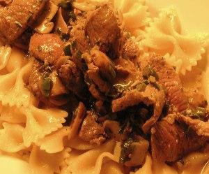

Pasta mit Lammgeschnetzeltem
5 von 6Geschnetzeltes Lamm mit Knoblauch, Senf, Rosmarin und Pfeffer marinieren, beiseite stellen. Frühlingszwiebeln und Champignons in Butter anbraten und mit Weisswein ablöschen, abschmecken. Wenn die Pasta fast gar ist, das Lamm sehr heiss und ganz kurz anbraten, mit den Pilzen vermengen. Mit der Pasta mischen und servieren.
